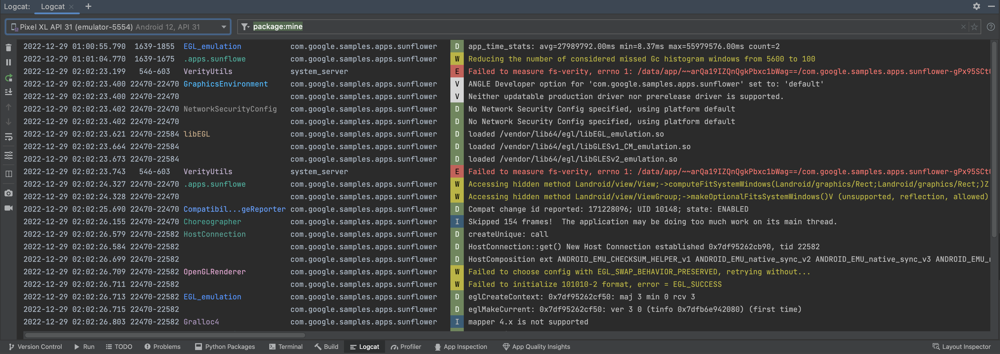

Ta première enquête
Comprendre ton premier bug.
L’application démarre. Pourtant, un clic peut mal se passer. Apprends à observer le problème, trouver un indice et vérifier une petite correction.
Commence dans le vrai Android Studio avec le projet de la page précédente. Cherche d’abord par toi-même : les aides se déplient quand tu en as besoin.
01 / Avant de chercher
Décris ce qui se passe.
Lance le quiz avec Run ▶ (exécuter). Lis l’écran d’accueil, puis clique sur Click me (« clique sur moi »). Observe ce qui arrive sur ton appareil.
Trois questions à expliquer à ton encadrant
- Quelle action viens-tu de faire ?
- Que pensais-tu qu’il allait se passer ?
- Qu’as-tu réellement observé ?
Relance l’application et recommence la même action. Est-ce le démarrage qui pose problème, ou le clic ? Refaire les mêmes étapes permet de vérifier le déclencheur.
Comparer avec le comportement prévu pour cet exercice
L’écran d’accueil apparaît. Le clic sur « Click me » provoque un arrêt de l’application. Selon l’appareil, tu peux revenir à l’accueil Android ou voir un message signalant l’arrêt.
Ce bug a été préparé pour l’exercice. Si tu ne vois pas le bouton ou si le problème se produit avant le clic, vérifie avec l’encadrant que tu exécutes la version prévue.
02 / Trouver les messages
Ouvre Logcat dans Android Studio.
- Ouvre View → Tool Windows → Logcat (affichage → fenêtres d’outils → Logcat).
- Dans ce panneau, choisis le même appareil que celui sur lequel tu lances le quiz.
- Dans le champ de filtre, saisis
package:fr.stageacademy.quiz is:crash. Ce texte sélectionne les messages de crash de notre application ; ce n’est pas une commande à exécuter dans le terminal. - Garde Logcat ouvert, relance l’app et clique à nouveau sur « Click me ». Regarde les nouveaux messages.


- En haut à gauche : l’appareil. Vérifie que tu observes celui utilisé pour ton quiz.
- À droite : le filtre. La capture utilise
package:mine; pour notre exercice, remplace-le par le filtre indiqué plus haut. - En dessous : les messages. Cherche ceux apparus au moment du clic. Une ligne rouge isolée ne suffit pas à expliquer un crash.
Je ne vois aucun message de crash
Vérifie l’appareil sélectionné et l’orthographe du filtre. Essaie package:fr.stageacademy.quiz pour voir tous les messages de notre app, puis reproduis le problème. Si le panneau est en pause, reprends son affichage. Demande à l’encadrant de vérifier la connexion si rien n’arrive.
Si le crash a déjà eu lieu, évite d’effacer ses messages avant de les lire. Si tu les as effacés, reproduis-le à nouveau.
03 / Lire sans tout comprendre
Retrouve trois indices.
Dans le message lié au dernier clic, cherche le type d’erreur, son explication, puis une référence à notre fichier MainActivity.kt. Tu peux rencontrer beaucoup d’autres lignes : tu n’as pas besoin de toutes les comprendre pour commencer.
Un premier indice pour orienter ma lecture
Cherche ArithmeticException. C’est le nom d’une erreur de calcul. Lis le message qui l’accompagne, puis retrouve une ligne contenant fr.stageacademy.quiz et MainActivity.kt.
Voir un exemple d’erreur et ses trois repères
Extrait illustratif simplifié, pas une capture du crash de ton appareil. Le nom des fonctions et la formulation exacte peuvent varier.
java.lang.ArithmeticException: divide by zero
… fr.stageacademy.quiz.…(MainActivity.kt:62)ArithmeticException: le type d’erreur, lié à un calcul.divide by zero: le message, « division par zéro ».MainActivity.kt:62: le fichier et le numéro de ligne à examiner. Ce numéro correspond à la version de départ ; il peut changer si le fichier est modifié.
Dans le vrai Logcat, clique sur la référence à MainActivity.kt pour ouvrir la ligne concernée. Si elle n’est pas cliquable, ouvre le fichier dans le panneau Project et rejoins la ligne indiquée dans ton message.
Chemin du fichier : app/src/main/java/fr/stageacademy/quiz/MainActivity.kt.
04 / Relier le message au code
Explique le calcul avant de le changer.
Lis la ligne pointée par Logcat et celle juste avant. Quelle opération vois-tu ? Quelles valeurs utilise-t-elle ? Explique ton hypothèse à l’encadrant avant d’ouvrir la suite.
Révéler le code et comprendre la cause
val nombreDeQuestions = 0
val pointsParQuestion = 100 / nombreDeQuestionsnombreDeQuestions donne un nom à la valeur 0. La seconde ligne essaie de répartir 100 points entre ce nombre de questions. Le symbole / demande une division.
On essaie donc de calculer 100 / 0. Cette division entière est impossible : elle déclenche l’erreur. Le clic exécute ce code, ce qui explique pourquoi l’écran d’accueil fonctionne avant le clic.
Le problème a été introduit volontairement pour apprendre à enquêter. Le message n’est pas une instruction à supprimer au hasard : il nous indique quelle opération examiner.
05 / Tester une hypothèse
Une petite correction, puis une vraie vérification.
Pour l’exercice, on souhaite répartir 100 points entre quatre questions. Quel nombre faut-il changer ?
Afficher la modification à faire
Dans le vrai fichier MainActivity.kt, remplace uniquement le 0 de cette ligne par 4 :
val nombreDeQuestions = 4Garde le calcul qui suit. 100 / 4 doit donner 25, puis le code déjà présent doit afficher ce résultat sur le bouton.
- Enregistre le fichier, puis clique sur Run ▶ pour reconstruire et relancer l’application modifiée sur le même appareil.
- Clique sur « Click me ».
- Vérifie les deux résultats : l’application reste ouverte et le bouton affiche 25 points par question.
- Dans Logcat, distingue les anciens messages du nouveau lancement : les erreurs précédentes restent parfois visibles. Regarde leur heure et le résultat du clic que tu viens de faire.
Le résultat attendu n’apparaît pas
Si le bouton « Click me » a disparu avant le lancement, ou si le crash persiste, vérifie le fichier modifié, la fin de la construction et l’appareil choisi avec l’encadrant. Relance avec Run. Une modification de texte dans l’éditeur ne change pas à elle seule l’app déjà installée.
06 / Raconter ton enquête
Qu’as-tu compris, et comment l’as-tu vérifié ?
Explique à ton encadrant : déclencheur → message → ligne → cause → correction → résultat.
Confirmations personnelles, sans vérification d’Android Studio ni sauvegarde dans le guide. La correction se fait dans ton projet Android ; cette page ne le modifie pas.
Question : la compilation réussit. Cela prouve-t-il que le clic fonctionnera ?
Non. La construction peut réussir et une erreur se produire ensuite, quand une action exécute un calcul. Il faut aussi tester le comportement de l’application.
Tu as terminé ta première enquête. Garde ton changement en local pour le moment : le commit et le partage seront accompagnés dans une prochaine étape.